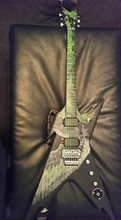

A diy kit to build your very own Dean Razorback! Be the new Dimebag Darrel with this kit
that includes pickups, pots, body, neck, floyd rose style bridge, tuning keys, 3 way pickup
switch, and knobs (2 vol, 1 tone).
$124.99
Submitted by: Zlow227
I made a razorback using this kit, and it is exactly what I wanted! It works perfectly and
plays amazing. It is my favorite guitar. I am so glad to have gotten it. Here is a picture to
show off my creation!
